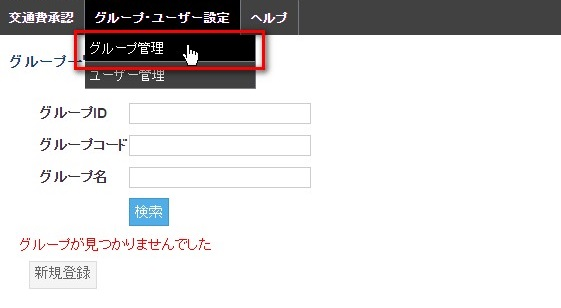
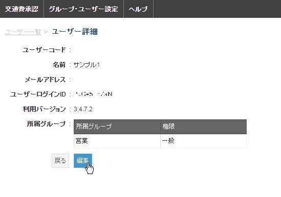
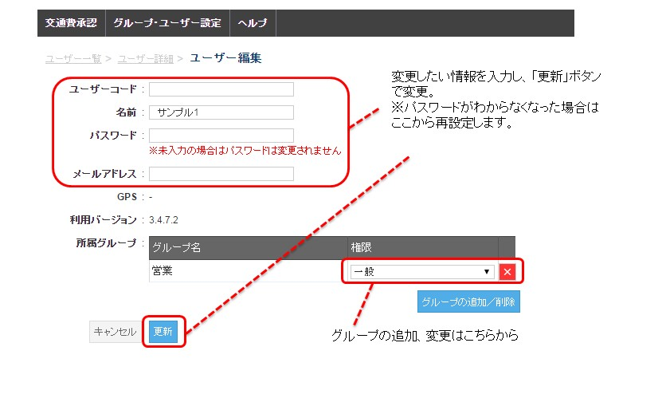
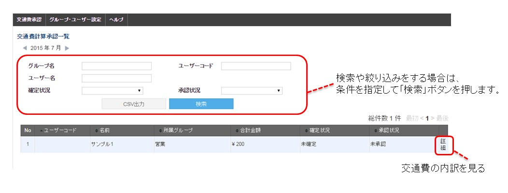

2. 管理者の使い方¶
2-1. 使用を始める¶
開通メール¶
お申込み後、「GPS Punch!」サポートより「開通メール」を送信します。 メールのタイトルは「【GPS Punch!】ログイン情報」です。 このメールにログインに必要な情報が記載されています。
ログイン¶
以下のURLより、IDとパスワードでログインします。 https://transit.gps-punch.jp/afc/
管理画面¶
以下はすでにユーザーを登録し、運用中の「ユーザー一覧」の画面です。 各所の見かた、操作方法についてご紹介します。
2-2. ユーザーを登録する¶
ユーザー登録の方法は２つ¶
交通費自動計算を使う人をユーザー登録する方法は以下の２通りがあります。
| 方法 | 内容 | 手順 |
| 【方法1】 | 管理者が「グループID」をメンバーに配布する方法 | １）管理者は1つ以上のグループを登録する
２）グループID（グループごとに１種類）をメンバーに伝える
３）メンバーは自分で名前、パスワードを決めてユーザー登録する
|
| 【方法2】 | 管理者が「ユーザーID」と「パスワード」を設定して、 それをメンバーに個別に配布する方法 | １）管理者は１つ以上のグループを登録する
２）グループに所属するメンバーを管理者がユーザー登録する
３）「ユーザーID」と管理者が決めた「パスワード」をメンバーに個別に伝える
４）メンバーは配布された情報でログインする
|
「グループの登録」は、方法１、方法２どちらの場合も必要です。
「ユーザー登録」は、方法1ではメンバーが行い、方法２では管理者が行います。
注釈
通常は手順が少なくて済む【方法1】を推奨します。
グループを登録する¶
グループを作る
複数の部署やチームをグループとして登録することができます。
交通費計算を使いはじめるために、必ず、グループを最低１つ作成・登録する必要があります。
初回ログインすると、以下のような画面になっています。「グループ管理へ」のボタンをクリックします。
- （または、上部にあるメニューバーの「グループ・ユーザー設定」から「グループ管理」を選びます。
- 
グループ名とグループコードを登録する
- ①上の2ヶ所に、任意のグループコードとグループ名を入力します。
- ②他の場所は設定を変えずに「登録」ボタンを押します。
注釈
グループコードとグループ名の２つを決めて、グループを最低１つ登録。 【方法1】の場合、登録はこれだけで、「2-3 メンバーに登録情報を配布する」に進みます。
登録ボタンをクリック→「はい」をクリックして、登録します。
これで「営業1部」が登録されました。
- 以下の図のように、「グループID」が発行されます。
- 交通費自動計算を使うメンバーにこの「グループID」をメールなどで伝えます。 メンバーは、アプリ「GPS Punch!」をダウンロード後、グループIDと自分で決めるパスワードでログインができます。
ユーザーを登録する¶
ユーザーを作る
ユーザー一覧の画面で、「新規登録」をクリックします。
「ユーザーコード」「名前」「パスワード」「メールアドレス」を入力します。
「所属グループ」は、「グループの追加/削除」をクリック→全グループ選択にチェック→営業１部をクリックして決定します。
すべての項目に入力して、「登録」ボタンを押します。
これで１人のユーザー登録が完了しました。
上記のように、ユーザー登録をすると「ユーザーログインID」が発行されます。 管理者が「ユーザーログインID」と、ユーザー登録時に決めた「パスワード」をメンバー一人一人に伝達し、メンバーがその情報でログインをすることができます。

2-3. メンバーに登録情報を配布する¶
メンバーにログイン情報を配布する
管理者は登録の作業が終わったら、交通費自動計算を使うメンバーのログインに必要な情報をメールなどで伝えます。
| 方法 | 状態 | 次のアクション |
| 【方法1】 | グループ登録が終了したら | 管理者が「グループID」をメンバーに伝達する |
| 【方法2】 | グループ登録とユーザー登録が終了したら | 管理者が「ユーザーログインID」と、ユーザー登録時に決めた「パスワード」をメンバーに個別に配布する |
2-4. メンバーの利用状況を確認/変更する¶
メンバーの状況を確認する
メンバーがアプリからのログインを完了し、アプリを起動するとサーバーに端末の情報が送信されます。
管理画面の「ユーザー一覧」で、ログインが完了し、アプリが起動されたかどうかを確認できます。
さらに詳しい情報を確認する場合、情報を編集する場合は「詳細」をクリックします

- ユーザーの詳しい情報を見る
「ユーザー一覧」で個別ユーザーの行の「詳細」をクリックすると、以下の画面になり、情報を確認することができます。

- ユーザーの情報を変更する
「ユーザー一覧」＞ユーザー詳細で、内容を変更する場合は「編集」ボタンをクリックします。
「ユーザー編集」画面で、変更したい項目の情報を入力して「更新」ボタンをクリックします。 パスワードがわからなくなった場合は、「パスワード」のテキストボックスに新しいパスワード入力して再発行できます。
ユーザーが所属するグループを追加、変更できます。

2-5. メンバーの交通費申請を承認する¶
- 交通費承認画面を見る
メニューバー一番左の、「交通費承認」をクリックすると、交通費承認画面になります。

検索条件を設定して、申請者を絞り込むことができます。 交通費申請の内訳を見るには、一番右の「詳細」をクリックします。

- 交通費申請を承認する
メンバーが交通費を確定させているとカレンダー表示が緑になります。内容を確認して承認します。

承認後に解除することもできます。

{kind=link}
{kind=link}
{kind=link}
2-6. メンバーの交通費利用者設定を確認する¶
- 交通費利用者設定を見る
メニューバーから「ユーザー管理」をクリックすると、ユーザーの一覧画面になります。
この画面の各ユーザーの「計算設定」をクリックすると、メンバーが自分で設定した交通費利用者設定を見ることができます。
設定については 3-5. 交通費自動計算の設定をする に記載しています。
2-7. 交通費のデータを出力する¶
- 交通費のデータを出力する
交通費の申請・承認のデータをCSV出力して、エクセルなどで閲覧・加工することができます。 メニューバー「交通費承認」から「交通費計算承認一覧」のページにある「CSV出力」をクリックすると、データがダウンロードできます。